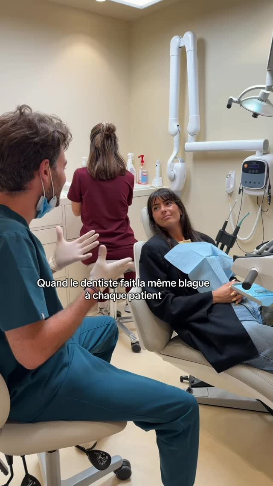
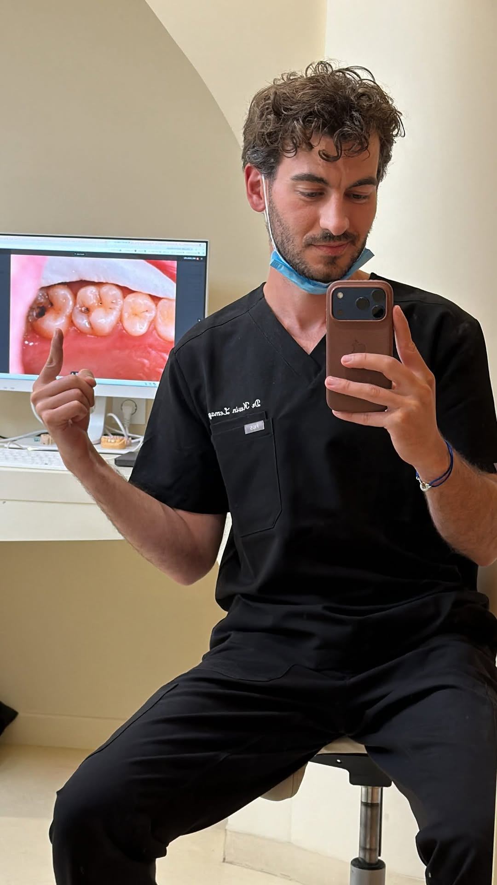
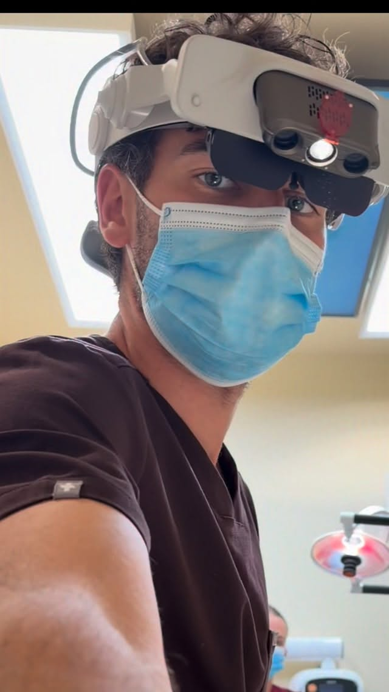
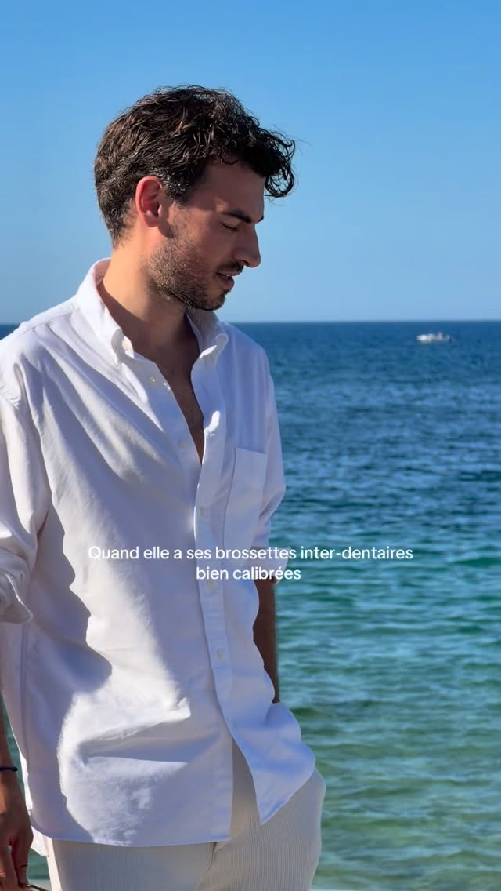
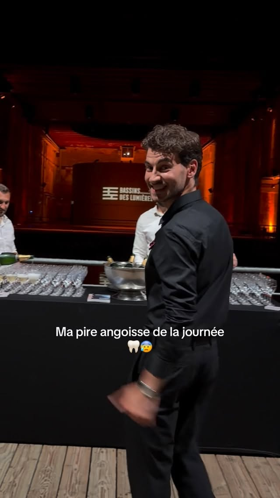
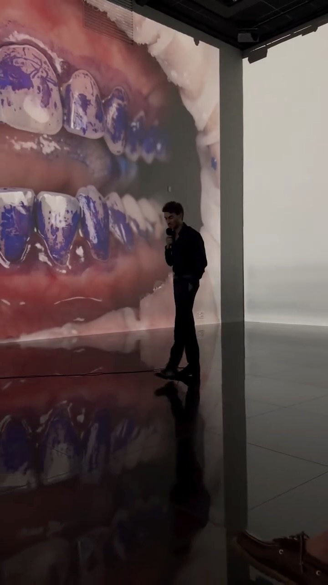
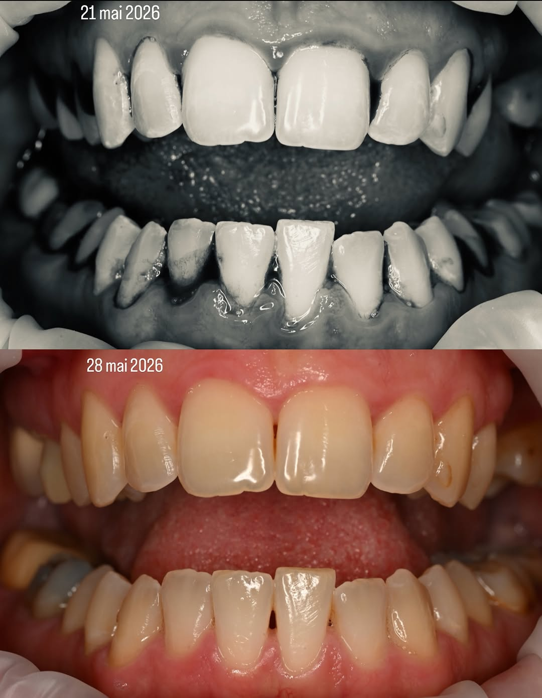
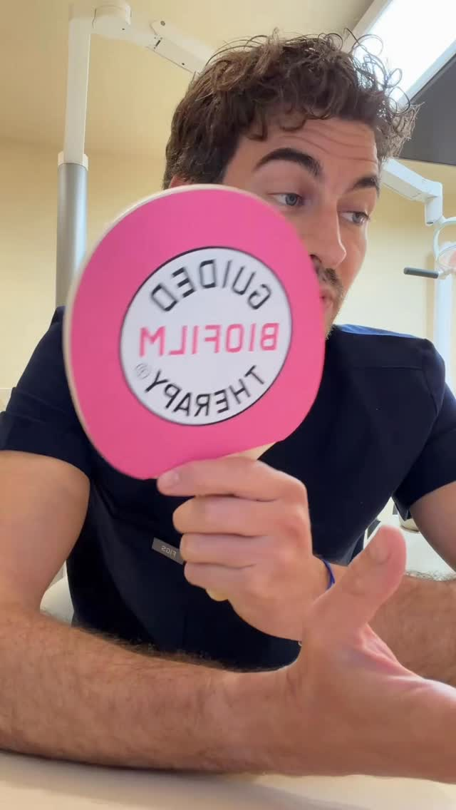
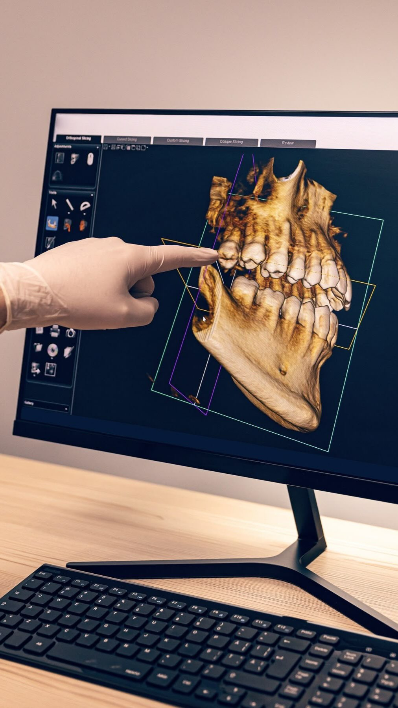
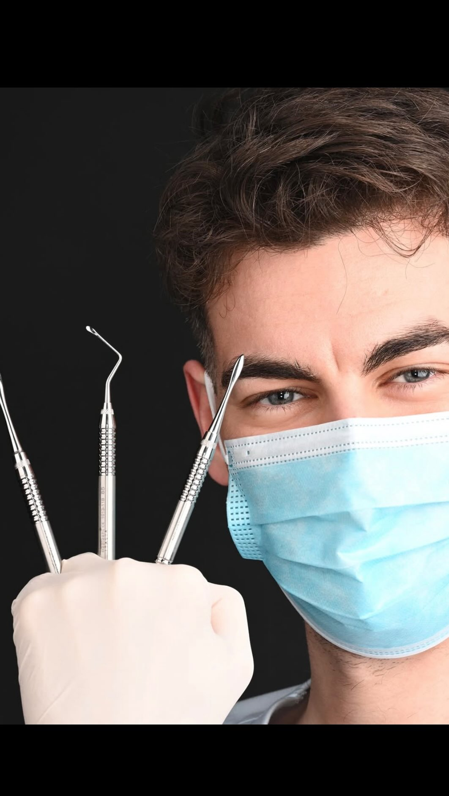

Les posts les plus marquants du dentiste docteur.kevin sur Instagram
Le Dr Kevin est un chirurgien-dentiste qui utilise Instagram pour éduquer, prévenir et sensibiliser ses patients. Ses posts alternent entre conseils pratiques (santé bucco-dentaire, soins préventifs), moments de vie (son quotidien au cabinet) et messages inspirants.









